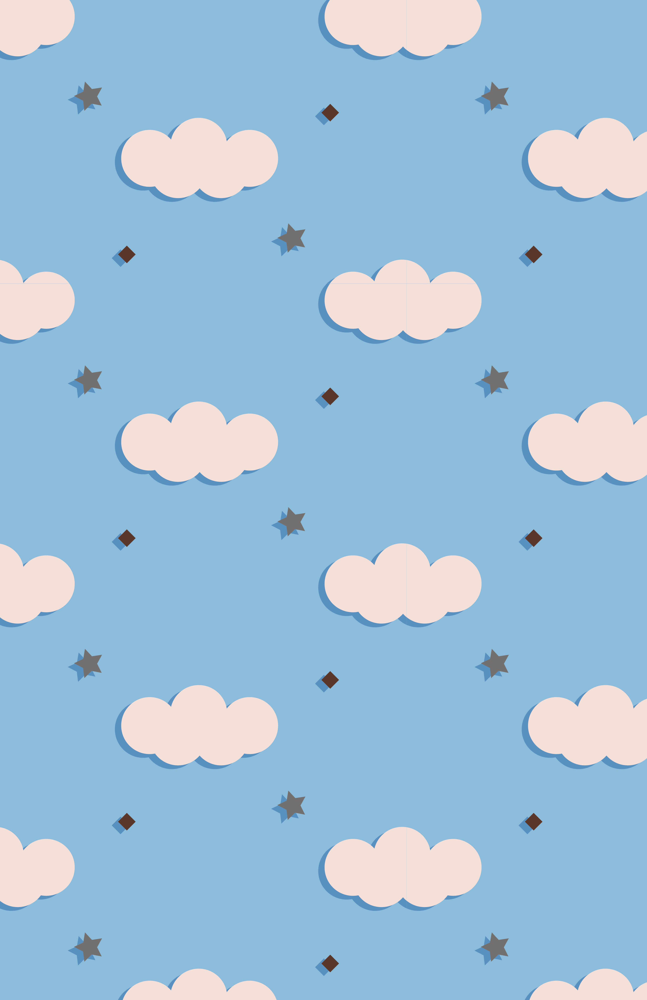

Color and Pattern Designs

This pattern was created with a range of analogous colors of purple and blue. I chose to use analogous colors because I wanted to use mainly purple in my design. I started by deciding on the color that I wanted to use as the theme color and selected the Analogous selection in Adobe Color. Then, I tweaked the brightness, hue, and saturation of a few of the colors in that palette. I saved that color palette and imported it to Adobe Illustrator to create the design above. I tried to keep the design simple and only used triangles as the main shape. I used the colors, opacity, and strokes to create different texture and complexity for this pattern. People can use this design on their webpage, clothing, or posters.

For this pattern, I created a color palette using a photo I took of the sky and river while biking. The colors taken from that photo was two shades of blue from the sky, a very light pink from my backpack, a dark shade of gray from the roads, and a chocolate brown color from my wristband. I chose the "Bright" option while creating this palette. When coming up with the design for this pattern, I used the photo as a reference and created the clouds using five small circles and merging it using the Shape Builder Tool. I kept the same color of blue (the lighter shade) that was extracted out of the sky as the background of the pattern and used the light pink as the color of the clouds. Then, I added a small brown square and a gray star to make the design more interesting. I didn't use the darker shade of blue for those colors because it does not stand out as much on top of the background (lighter) blue color. Even at that point, the design looks kind of bland. So I created a shadow using the darker blue to create a false third dimension for the objects. This design is suitable for webpage and illustration backgrounds since the pattern itself does not stand out a lot. It can also be used on gift wrapper since it is colorful and light design. But it won't look so nice on clothing since the design will stand out a lot in that case.

I created this pattern for fun. Since my name is Cherry, I wanted to create a pattern related to it. To begin, I picked a color palette from the trending illustration list in Adobe Color. It is composed of a big range of different colors. I used the ellipse tool to create the two cherries and used the pen tool to draw to stem and highlight of the fruit. I experimented with different colors from the palette as the highlight and found yellow as the most suitable color. Then I went to create the lemon. First, I made an oval and then used the pencil tool to draw the ends of the lemon. Next, I joined the shape using the Shape Builder Tool. I chose a blue highlight for the lemon because it would balance out with the small blueberry I was about to draw next. I used a hexagon instead of a circle to add texture. Then I created an orange after that. I would like to use this pattern as the background of my website. But it can also be used as backgrounds of posters and gift wrappers.